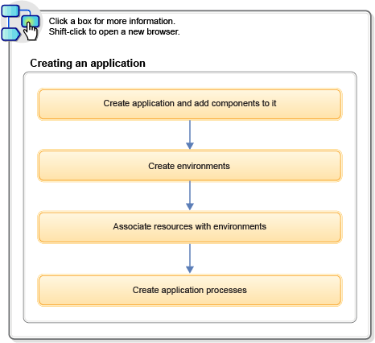

Getting started with creating applications
Applications associate resources with environments and define processes to run deployments.
The following diagram summarizes the steps for creating applications:

After defining the application itself, you identify the components that it manages, and create application processes that coordinate their deployment. Finally, you create the environments that serve as deployment targets, and map resources to them.
Related topics:
- About HCL® UrbanCode™ Deploy properties; see Properties
- How to create snapshots; see Snapshots
- How to import applications; see Importing applications
Parent topic: Applications